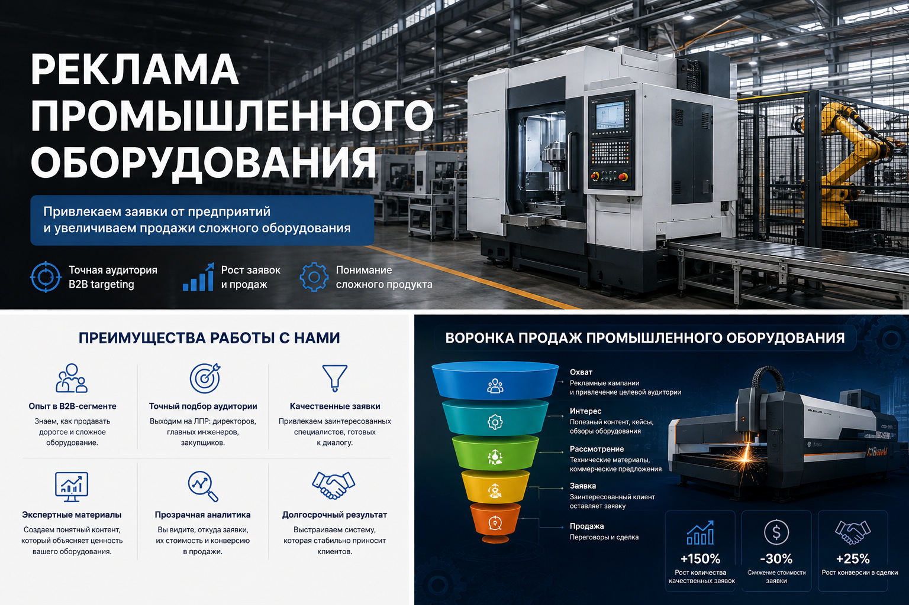
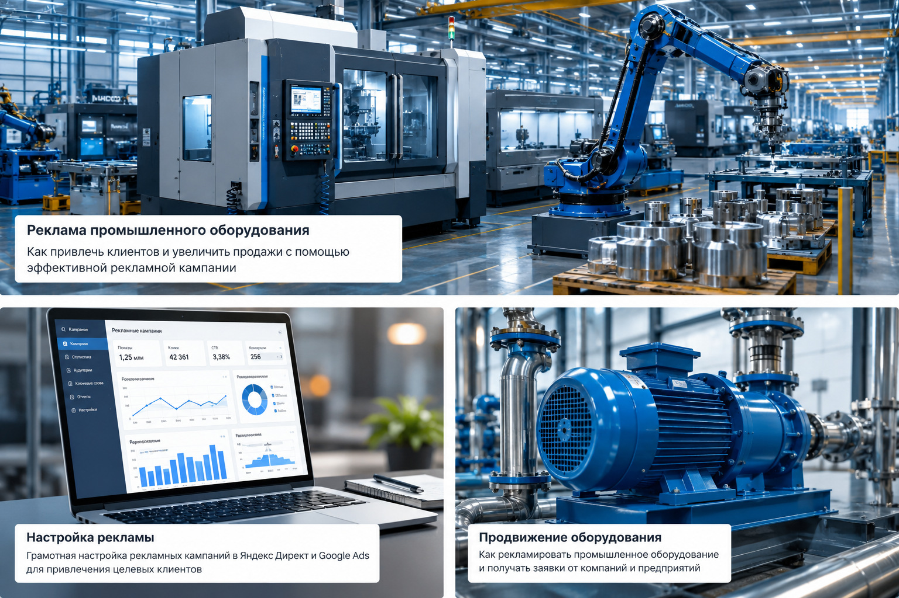
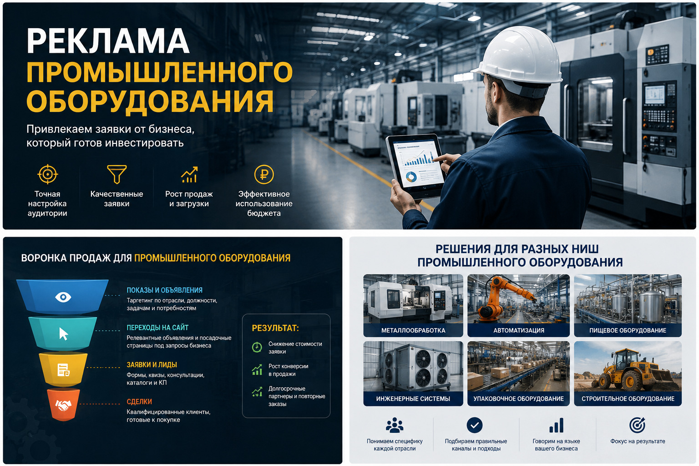

Блог о платном трафике
Реклама промышленного оборудования: как получать B2B-заявки
Реклама промышленного оборудования работает лучше всего, когда она построена вокруг конкретной задачи покупателя: подобрать станок, линию, агрегат, комплект оборудования или поставщика под определенные технические требования.
Вести весь трафик на общий каталог и оценивать результат только по количеству заявок в этой нише обычно недостаточно.
Покупка оборудования в B2B редко происходит за один визит. Клиент изучает характеристики, сравнивает производителей и поставщиков, уточняет сроки поставки, сервис, монтаж, гарантию и условия оплаты. Поэтому рекламная система должна связывать спрос, релевантную посадочную страницу, квалификацию обращения и дальнейшую продажу.

Чем реклама промышленного оборудования отличается от обычной рекламы
Главное отличие - в цене ошибки. В потребительской нише нецелевой клик часто просто съедает небольшую часть бюджета. В продаже промышленного оборудования один неверно выбранный сегмент может месяцами приводить студентов, частных покупателей, соискателей, пользователей, которые ищут ремонт, чертежи или информацию для самостоятельного изготовления.
Есть и другие особенности:
- узкий и неоднородный спрос;
- длинный цикл принятия решения;
- несколько участников сделки со стороны клиента;
- высокая роль технических характеристик;
- разная экономика товарных групп;
- ограниченное количество действительно целевых запросов;
- часть обращений приходит по телефону, почте или после повторных визитов;
- продажа может завершиться значительно позже первого перехода из рекламы.
Поэтому задача рекламы - не собрать максимум трафика, а получить достаточное количество подходящих компаний, которым действительно нужен конкретный вид оборудования.
По общей логике продвижения производственных компаний у меня есть отдельный материал: реклама производственной компании. Здесь я сосредоточусь именно на продаже оборудования.
Сначала нужно разделить оборудование на рекламные направления
Одна из частых ошибок - запускать весь ассортимент одной кампанией и вести пользователей в общий каталог. Для промышленного оборудования такая структура быстро становится непрозрачной.
Разделение стоит делать по реальному поведению покупателя. Например:
- Отдельные типы оборудования.
- Серии и модели.
- Отрасли применения.
- Задачи, которые решает оборудование.
- Продажа нового и бывшего в эксплуатации оборудования, если компания работает в обоих направлениях.
- Поставка, монтаж, пусконаладка и сервис, если это отдельные услуги.
Если у направлений разные средние чеки, маржа, география или цикл сделки, их тем более нужно оценивать отдельно. Иначе дешевые обращения по одному продукту могут скрывать слабую экономику другого.
Какие запросы собирать для Яндекс Директа
Семантика промышленного оборудования обычно шире, чем несколько фраз вида «купить станок» или «цена линии». Пользователь может искать решение через техническое название, модель, отраслевую задачу или характеристику.
Рабочие группы спроса:
- категория оборудования + коммерческий признак: купить, цена, поставщик, заказать;
- конкретный тип, модель или серия;
- оборудование для определенной операции или производства;
- запросы по производительности, мощности, размерам и другим ключевым характеристикам;
- комплектные решения и производственные линии;
- брендовые запросы, если компания продает известные марки;
- запросы по аналогам и замене оборудования, если это реально соответствует предложению.
При этом промышленная семантика часто содержит много шума. Я регулярно проверяю фактические поисковые фразы и исключаю запросы про вакансии, обучение, рефераты, чертежи, самостоятельную сборку, бытовые товары, ремонт и другие направления, которые компания не продает.
Подробнее о структуре производственных кампаний - в статье настройка Яндекс Директ для производства.
Поиск, РСЯ и ретаргетинг решают разные задачи

Поиск
Поиск обычно становится основным каналом, когда спрос уже сформирован. Пользователь вводит конкретную модель, тип станка, линию, установку или промышленный агрегат и сравнивает поставщиков.
Для такого трафика критична точность соответствия объявления и страницы запросу. Если человек ищет конкретный тип оборудования, а попадает на главную страницу с десятками категорий, часть потенциальных клиентов просто уйдет.
РСЯ
Рекламная сеть Яндекса полезна в двух ситуациях: когда прямого спроса мало и когда нужно расширить охват за пределы узкой поисковой семантики.
Но в промышленном B2B нельзя оценивать РСЯ по дешевым кликам. Нужна проверка качества обращений. В креативах лучше показывать реальное оборудование, узлы, линию в работе, производство или готовый объект, а не абстрактные стоковые изображения.
Ретаргетинг
Покупатель оборудования редко принимает решение после первого посещения сайта. Поэтому отдельная работа с посетителями, которые смотрели конкретные категории, характеристики или страницы моделей, логична для длинного цикла сделки.
Повторное сообщение должно продолжать выбор, а не просто повторять первое объявление. Например, можно вернуть пользователя на страницу модели, предложить расчет комплектации, подбор аналога или консультацию инженера.
Какая посадочная страница нужна для рекламы оборудования
Для сложной техники карточка товара или лендинг должны отвечать на вопросы закупщика и технического специалиста быстрее, чем менеджер успеет перезвонить.
На странице желательно показать:
- назначение оборудования;
- основные технические характеристики;
- варианты комплектации;
- фотографии и видео реальной техники;
- условия поставки;
- монтаж и пусконаладку, если они входят в предложение;
- гарантию и сервис;
- сертификаты и документацию, если они важны для закупки;
- реализованные проекты или примеры применения;
- понятный способ запросить цену, подбор или коммерческое предложение.
Для дорогого оборудования часто лучше работает не форма «оставьте заявку», а конкретное действие: «получить расчет», «подобрать модель», «запросить КП», «обсудить ТЗ».
Общий корпоративный сайт может хорошо работать для SEO, но платный трафик лучше направлять на страницу, максимально соответствующую запросу пользователя.
Нужно оценивать не только лиды, но и их качество
В промышленном оборудовании CPL сам по себе мало что говорит. Дешевая заявка может оказаться запросом от частного лица или компании с неподходящим бюджетом. Более дорогой лид может привести к крупной сделке.
Я бы смотрел минимум на такую цепочку:

- Обращение.
- Квалифицированная заявка.
- Расчет или коммерческое предложение.
- Переговоры.
- Сделка.
Если используется CRM, полезно возвращать в аналитику статусы качественных заявок и сделок. Яндекс поддерживает передачу офлайн-конверсий, чтобы учитывать действия, которые произошли уже после заявки на сайте.
Для B2B это особенно полезно: алгоритм получает данные не только о пользователях, которые легко заполняют форму, но и о тех, кто реально проходит дальше по воронке.
Реальные B2B-кейсы: почему универсальной схемы нет
У меня на сайте есть несколько производственных проектов, которые хорошо показывают разницу между типами спроса.
В кейсе фабрики детской одежды под пошив на заказ и продажу готовой продукции сделали отдельные посадочные страницы. Основной объем обращений дала РСЯ - около 4 долларов за лид при бюджете примерно 500 долларов в месяц. Поиск по пошиву давал более горячие обращения, но стоил дороже.
В кейсе организации швейного производства ситуация была обратной. При ограниченном бюджете основной упор сделали на Поиск. Он давал наиболее стабильные B2B-заявки примерно по 1500 рублей, при общем диапазоне 1500-3000 рублей за обращение.
Эти проекты относятся к производственному B2B, а не к продаже станков, но принцип для промышленного оборудования тот же: канал выбирается не по шаблону, а по фактическому спросу, качеству лидов и экономике конкретного продукта.
Что чаще всего ухудшает результат
Весь ассортимент в одной кампании
Если дорогая линия и относительно недорогой агрегат оцениваются одной средней ценой заявки, реальная экономика теряется. Кампании или хотя бы группы продуктов должны позволять раздельно видеть расходы и результат.
Слишком общие объявления
Фразы вроде «промышленное оборудование от производителя» не объясняют, что именно продается и кому. Для узкого спроса лучше работает конкретика: тип оборудования, назначение, поставка, сервис, наличие, условия подбора.
Слабая техническая информация на сайте
Покупатель промышленной техники часто приходит с уже сформированными требованиями. Если на сайте нет характеристик, комплектаций, документации и примеров применения, реклама приводит пользователя, но не помогает ему сделать следующий шаг.
Оптимизация по любой отправке формы
Если в одну цель попадают реальные закупщики, студенты, частные лица и запросы на ремонт, автоматическая стратегия получает противоречивый сигнал. При достаточном объеме данных лучше передавать в аналитику квалифицированные этапы из CRM.
Оценка рекламы слишком рано
Сделка по оборудованию может проходить через подбор, расчет, согласование технического задания, коммерческое предложение и переговоры. Оценивать канал только по продажам первых дней некорректно. Нужны промежуточные статусы, которые показывают движение заявки к контракту.
Как я строю рекламу промышленного оборудования
Мой рабочий порядок выглядит так:
- Разбираю ассортимент, маржинальность и приоритетные направления.
- Смотрю поисковый спрос и конкурентов.
- Разделяю продукты и сценарии покупки.
- Проверяю страницы сайта и точки обращения.
- Настраиваю Метрику, цели, звонки и передачу данных из CRM, если она есть.
- Запускаю Поиск по сформированному спросу.
- Подключаю РСЯ и ретаргетинг там, где это оправдано объемом спроса и экономикой.
- Оптимизирую кампании по качеству заявок, а не только по стоимости формы.
- Масштабирую направления, в которых подтверждается реальная экономика.
Сейчас для таких задач в Яндекс Директе используется Единая перфоманс-кампания, где можно управлять размещениями на Поиске, в РСЯ и других доступных площадках. Но сама структура кампании не заменяет правильную сегментацию и аналитику.
Отдельно о производственной контекстной рекламе я писал в материале контекстная реклама для производства.
Сколько стоит реклама промышленного оборудования
Универсальной цены клика, лида или рекламного бюджета для этой ниши нет. Два поставщика оборудования могут работать в одной отрасли, но иметь разный средний чек, маржу, географию, известность бренда и конверсию сайта.
Поэтому бюджет нужно считать от экономики бизнеса:
- сколько компания готова платить за квалифицированную заявку;
- какая доля лидов доходит до расчета или КП;
- какая доля КП превращается в сделку;
- какая маржа остается после продажи;
- какой объем спроса вообще существует по этому направлению.
Если этих данных пока нет, первый запуск лучше рассматривать как тест, задача которого - получить реальные ориентиры по спросу и качеству обращений.
Когда реклама промышленного оборудования имеет смысл
Яндекс Директ особенно полезен, если есть сформированный спрос на конкретные типы оборудования или понятные аудитории для дополнительного охвата. До запуска желательно иметь нормальный каталог или посадочные страницы, техническое описание продукта, понятную географию поставок и процесс обработки заявок.
Если компания пока не понимает, какие продукты нужно продвигать, кто принимает решение о покупке и сколько можно платить за клиента, рекламный кабинет эту проблему не исправит. Сначала нужно собрать предложение и аналитику, затем покупать трафик.
На главной странице naklikay.ru собраны мои кейсы по Яндекс Директу и B2B-проектам.
FAQ
Что лучше для промышленного оборудования - Поиск или РСЯ?
Если есть прямой сформированный спрос, обычно логично начинать с Поиска. РСЯ подключается для расширения охвата, ретаргетинга и работы с аудиторией, которая еще не ввела точный коммерческий запрос. Итоговое решение нужно принимать по качеству заявок.
Нужно ли делать отдельную страницу под каждый тип оборудования?
Не обязательно под каждую модель. Но если группы оборудования сильно отличаются по назначению, аудитории и цене, отдельные страницы обычно упрощают рекламу и повышают релевантность трафика.
Что считать основной конверсией?
Для старта - реальные обращения: формы, звонки, запросы КП. При длинном цикле сделки лучше дополнительно передавать из CRM квалифицированные заявки, расчеты, договоры и оплаты.
Можно ли рекламировать дорогие станки и линии через Яндекс Директ?
Да, если есть спрос или подходящие аудитории. Но эффективность нужно оценивать не по количеству дешевых лидов, а по квалифицированным обращениям, коммерческим предложениям и сделкам.